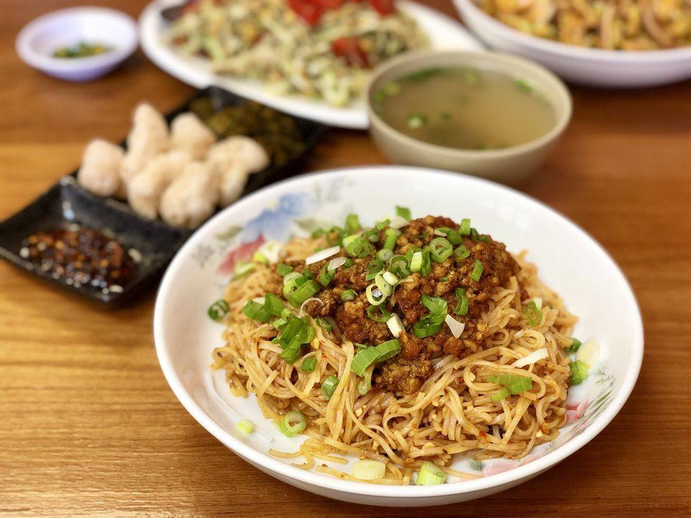

Home Page
Mohinga
Laphat Thoke
Shan Noodle

Shan Noodle
Shan noodle is a popular Burmese dish originating from Myanmar’s Shan State,
made with soft rice noodles topped with a savory tomato-based sauce, usually
containing chicken or pork, and garnished with pickled mustard greens, peanuts,
garlic oil, and fresh herbs. The dish can be served dry—with sauce coating the
noodles—or as a soup with a light, aromatic broth, offering a comforting balance of savory,
tangy, and slightly sweet flavors. Shan noodle is known for its unique combination
of soft noodles, rich sauce, and fresh, crunchy toppings.
Ingredients
- Rice noodles
- Chicken or pork (minced or sliced)
- Tomatoes (fresh and/or tomato paste)
- Garlic
- Shallots or onions
- Ginger
- Soy sauce (light and/or dark)
Steps
- Prepare rice noodles by soaking or boiling until tender.
- Sauté garlic and shallots, then add minced chicken or pork and cook until browned.
- Add tomatoes, tomato paste, and fermented soybean paste (or miso); cook until tomatoes soften.
- Season with soy sauce, fish sauce, chili powder, turmeric, sugar, and a splash of broth; simmer until sauce thickens.
- Drain cooked noodles and divide between bowls.
- Top with the savory meat sauce, then garnish with pickled mustard greens, peanuts, fried garlic, spring onions, and fresh cilantro.
- Serve with lime wedges and chili oil on the side.